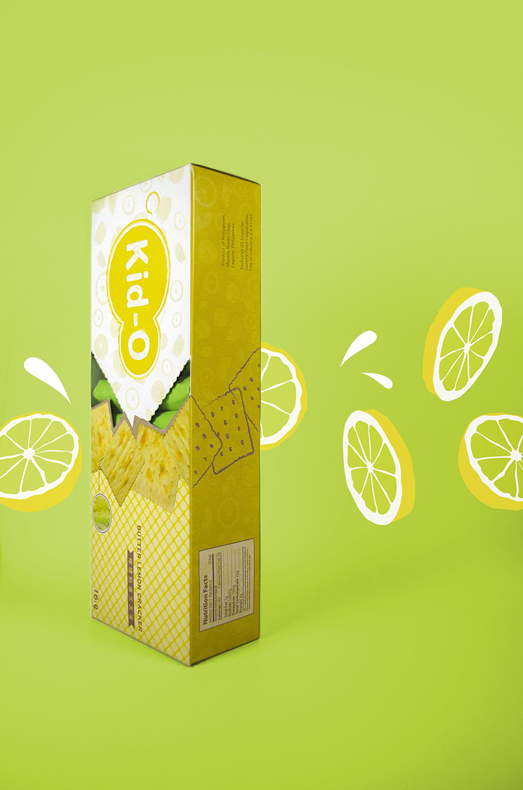
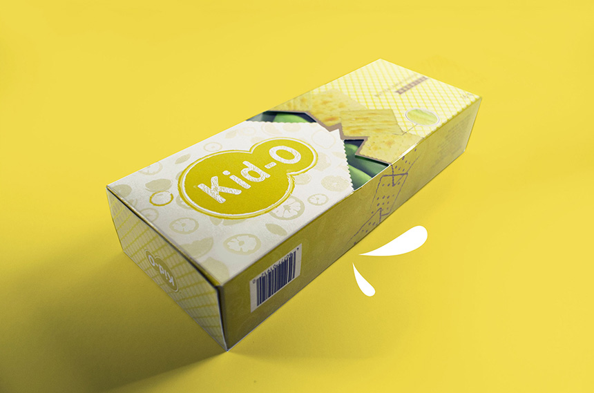

PACKAGING REDESIGN | Kid-O
The purpose for this project is to solve all the graphic problem from original packaging, and then create a new design that is more appropriate to the brand and be more attractive to the market. There is no element that I can use from the original packaging, so I redesign the logo, pattern, box and the inside wrapping. The idea based on the name kid. I use hand drawing style for the whole box. For food packaging, it is important to show what the actual product look like, so that is why i photograph the crack and combine it to with the drawing element.


